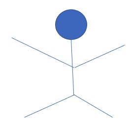

ABOUT
POSYDON is a collaborated project, including CIERA at Northwestern University
An old man lived in the village. He was one of the most unfortunate people in the world. The whole village was tired of him; he was always gloomy, he constantly complained and was always in a bad mood.
The longer he lived, the more bile he was becoming and the more poisonous were his words. People avoided him, because his misfortune became contagious. It was even unnatural and insulting to be happy next to him. He created the feeling of unhappiness in others.
But one day, when he turned eighty years old, an incredible thing happened. Instantly everyone started hearing the rumour:
“An Old Man is happy today, he doesn’t complain about anything, smiles, and even his face is freshened up.”
The whole village gathered together. The old man was asked:
Villager: What happened to you?
“Nothing special. Eighty years I’ve been chasing happiness, and it was useless. And then I decided to live without happiness and just enjoy life. That’s why I’m happy now.” – An Old Man
NEWS
- (02.30.2077). Something happened
- (02.17.1963). Michael Jordan was born
Research
People have been coming to the wise man, complaining about the same problems every time. One day he told them a joke and everyone roared in laughter. After a couple of minutes, he told them the same joke and only a few of them smiled. When he told the same joke for the third time no one laughed anymore.
The wise man smiled and said: “You can’t laugh at the same joke over and over. So why are you always crying about the same problem?”
Worrying won’t solve your problems, it’ll just waste your time and energy.
TEAM
|  ABC |
ABC |
ABC |